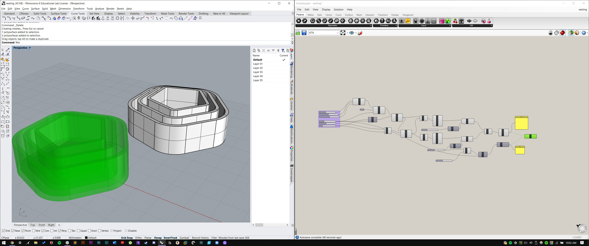
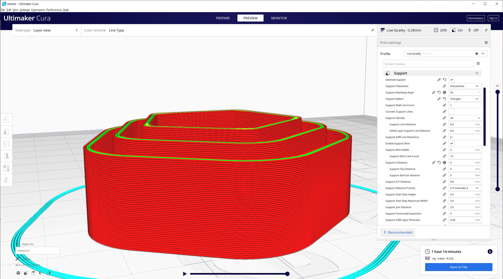

Diving into Grasshoper
Part I: Construction Kit
I created my clips to hold together Staedtler Triplus Fineliner pens.
Part II: Nested objects in Grasshopper
I made pretty much every part of the definition parametric. You can change the wall and base thicknesses, wall height, the number of sides and size of the base polygon, the air gap between the nested objects, and the number of nested objects. Here is a screenshot of my grasshopper definition and the output in Rhino. The files are located here.
I sliced the file in Cura, changing a couple settings so that the small gap between each bowl had a tiny bit of support material in it. To do this, I had to change the default support air gap to zero.
I printed the file at low-quality settings because I don't care too much about quality. Here are some in-progress print photos:


Finally, I took nested bowls apart when they were done. If I really wanted to make litle bowls like these, I wouldn't print them in a nested state due to the requirement of supports and the effect that has on the surface quality.